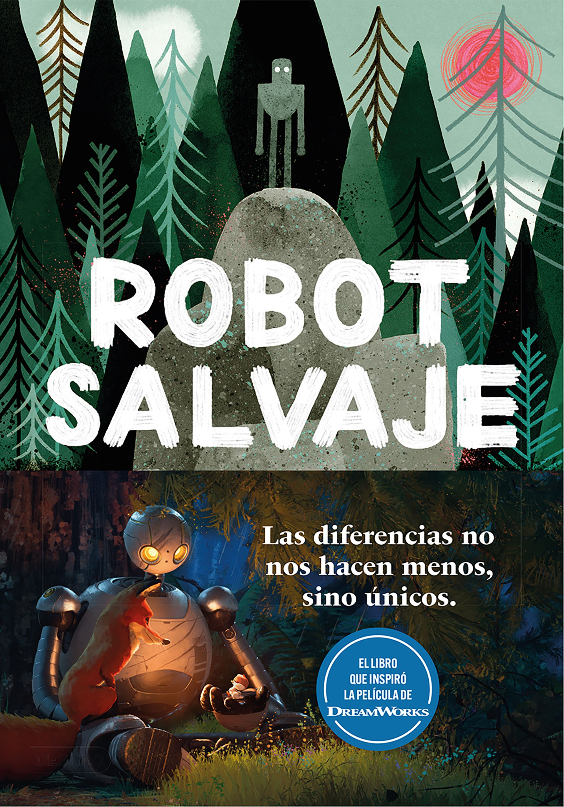
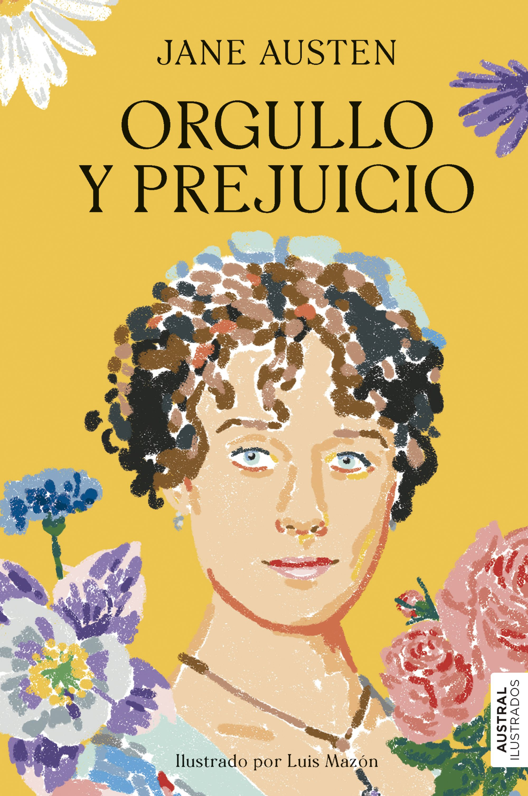

El robot salvaje - Peter Brown
Autor: Peter Brown
Género: Literatura infantil/juvenil, ciencia ficción
Publicación: 2016

"El robot salvaje" es una hermosa historia ilustrada que narra las aventuras de Roz, un robot que despierta solo en una isla deshabitada, después de un naufragio. A medida que explora su entorno, Roz comienza a adaptarse al mundo salvaje, aprendiendo de los animales y la naturaleza que la rodean. Lo que inicia como un relato de supervivencia, se convierte en una historia profunda sobre la conexión, la empatía y la esencia de lo que significa ser “humano”.
Peter Brown combina una narrativa sencilla y poderosa con ilustraciones encantadoras. Es una lectura ideal tanto para niños como para adultos, con temas sobre el medio ambiente, la soledad y la importancia de adaptarse sin perder la identidad.
Más información
El diario de Ana Frank
Autora: Ana Frank
Género: Biografía, historia, diario
Publicación: 1947 (póstumamente)

Este libro es el diario real de Ana Frank, una niña judía de 13 años que se ocultó con su familia durante la ocupación nazi en los Países Bajos. Durante dos años, Ana escribió en su diario sus pensamientos, emociones y experiencias mientras vivía escondida en una pequeña buhardilla.
A través de sus palabras, conocemos a una joven con una inteligencia aguda, un corazón sensible y una profunda esperanza en medio del horror. "El diario de Ana Frank" es un testimonio conmovedor de la Segunda Guerra Mundial, pero también una reflexión sobre el crecimiento personal, los sueños y el espíritu humano.
Su lectura es imprescindible, no solo por su valor histórico, sino también porque nos recuerda la importancia de la libertad, la tolerancia y la memoria.
Sitio oficial
Orgullo y prejuicio - Jane Austen
Autora: Jane Austen
Género: Novela romántica, clásica
Publicación: 1813

"Orgullo y prejuicio" es una de las novelas más conocidas y queridas de la literatura inglesa. Narra la historia de Elizabeth Bennet, una joven inteligente e independiente, y su relación con el enigmático Sr. Darcy. Lo que comienza como una serie de malentendidos, evoluciona en una historia de amor marcada por el crecimiento personal, los errores humanos y la transformación interior.
Jane Austen utiliza un estilo irónico y elegante para retratar las normas sociales de la época, especialmente en lo relacionado con el matrimonio y la posición social. Elizabeth y Darcy se convierten en símbolos de la lucha contra los prejuicios y la importancia de conocerse a uno mismo antes de juzgar a los demás.
Esta obra no solo es un romance clásico, sino también una crítica social brillante, con personajes memorables y diálogos agudos. Ideal para quienes buscan una lectura inteligente, entretenida y atemporal.
Leer más